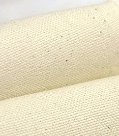

흡습성이 우수하며 땀의 발산이 빠르며 대부분의 염료에 염색성이 우수하다.
열 전도도가 타섬유에 비해 높기 때문에 무더위시에도 피부에 시원한 느낌을 준다.
흡수성과 착용감이 좋으며,
오염을 잘 흡수하여 위생적이고,
세탁하기가 편리하며 속옷을 비롯하여 모든 옷의 재료로 사용된다.
<대표적인 면 종류>
데님 | |
코듀로이 |  |
옥스포드 |  |
포플린 |  |
장점
- 친환경적
- 천염섬유로 인체에 부작용이 없다.
- 흡습성이 좋다.
단점
- 생산비용이 비싸다.
- 재질의 강도가 약하다.
- 광택적이고 굵기 조절이 어렵다.
강도가 강하고 흡습성과 통기성이
풍부하며 촉감이 좋으나 탄성율이
적어 구김이 잘 간다.
습도가 높은 여름철용 옷에는
없어서는안 될 옷감이며,
마에는 여러가지 종류가 있으나
아마(Linen) 와 저마(Ramie)가
주로 사용된다.
아마(Linen)
북서유럽과 중국에서
주로 생산되는데
섬유가 가늘고 균일하여
광택성이 좋은 유럽산 원료로
품질도 고급이지만가격도 많이 비싸
저급품과는 상당한차이가 있으며,
아마의 종자부터 섬유까지를
FLAX라 하고,
FLAX를 가지고 만들어낸
최종 제품인 실이나 직물을
Linen 이라고 한다.
저마(Ramie)
중국에서 다량생산되며 소모방적법을
사용하기때문에 대량생산이 가능하여
값이 저렴하나 촉감이 거칠고
지나치게 뻣뻣한 흠이 있다.
장점
- 면보다 재질이 강하며 물에 젖으면 더 강해진다.
- 통풍이 뛰어나 시원하며 흡수를 잘 한다.
- 흡수한 수분을 잘 발산시켜 쉽게 오염되지 않는다.
단점
- 구김이 잘 간다.
- 신축성이 거의 없어 잘 늘어나지 않고 딱딱한 느낌이다.
합성 섬유는 석탄, 석유, 물, 공기 등을
원료로 하여 만든
인공섬유를 말한다.
실 모양으로 만들 수 있는 플라스틱을
천연 섬유 같은
섬유 형태로 만든 것이다.